Secure software development module e-Portfolio.
Below you will find the complete collection of reflections, assignments and artefacts organized from the units.
Module Overview
Secure software development is a critical aspect of creating robust and safe software systems. This module provides a comprehensive overview of secure software development practices, covering fundamental concepts and best practices such as risk assessment, threat modelling, and secure coding techniques. We will examine different software development methodologies and how to integrate security practices into them, as well as the importance of testing and verification to identify vulnerabilities in software systems.
Learning outcomes
- Identify & manage security risks as part of a software development project
- Critically analyse development problems and determine appropriate methodologies, tools and techniques to solve them
- Design, develop and adapt programs and to produce a solution that meets the design brief and critically evaluate solutions that are produced
- Systematically develop and implement the skills required to be effective member of a development team in a virtual professional environment, adopting real-life perspectives on team roles and organisation
Unit 1: Introduction to Secure Software Development
The first unit of this module introduces the both concepts of unified modelling language (UML) and the Waterfall and Agile approaches to software development. As well as this the concepts of personal awareness and having a risk-aware culture is developed upon. As important as it is to develop software that is secure, this is only one aspect to responding to the security challenges. It is critical that the people who are internal to the organisation develop a security-responsible attitude.
Artefacts: Software development and UML
The waterfall and agile approach are two different ways to develop software. The waterfall approach is a sequential process where each step of the development cycle is completed before moving on to the next. The Agile approach is flexible and iterative, focusing on teamwork, collaboration, and customer satisfaction. The choice of approach depends on the project's requirements, complexity, and team dynamics
UML is a visual language used to design, document, and explain software systems. It has standardized diagrams that represent different aspects of a system and can be used throughout the software development process to model differing perspectives of the system. UML provides developers with a standardized way to visually communicate a software system's architecture, design and behaviour. This enabling them to better understand and communicate, software systems.
Discussion Forum: Initial Post
Broken access control is one of the 10 weaknesses identified by OWASP. Access control is a method for which the right to access data and functions are determined. It outlines the permissions of an authenticated user, this involves the polices or rules which are set in place to limit access, these can be but are not limited to the user device and location. Broken access control occurs when unauthorized access to data and content occurs. This includes viewing, altering and taking control over the administration of a site or program. Broken access control is a product of not effectively implementing when authentication and access restriction, therefore allowing for attackers/hackers to gain access to sensitive files and control over the systems. To prevent broken access control a focus on preventing configuration errors and promoting a higher standard of control access practices in development is necessary. This involves improving the security involved with user ID credentials so that attackers are unable to use other users to gain access. File permission protection is another necessary area of focus as although almost all data is stored in back end servers, with only a few locally stored files it is important that these are not publicly accessible and that most directories are not readable with even fewer being marked as executable. Allowing for the inclusion of different control access systems can help to provide a higher level of security that can reduce broken access control occurring by tailoring the access system specifically to the function. Such as implementing discretionary access control (DAC), role-based access control (RBAC) or mandatory access control (MAC).
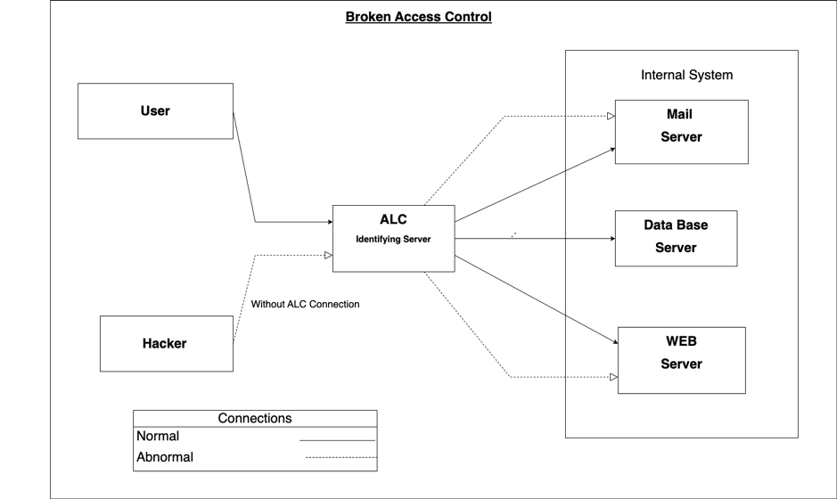References:
Unit 2: UML Modelling to Support Secure System Planning
Artefact: System Planning
The second unit discusses the creation of flowcharts and how these are applied to the design stage of SDCL for the purpose of improving communication with stakeholders. Flowcharts are diagrams that represent a series of steps in a process. They can be used in the design stage of the software development process to support communication between stakeholders. Flowcharts help developers communicate design concepts in a clear manner and identify potential issues in the process. They also improve the final product's quality by ensuring it meets all requirements and is efficient as well as reliable.
Scrum Security Review
The 2-column table I made below includes the software development stages and the processes which are recommend to be applied at each stage to ensure that secure software is produced:
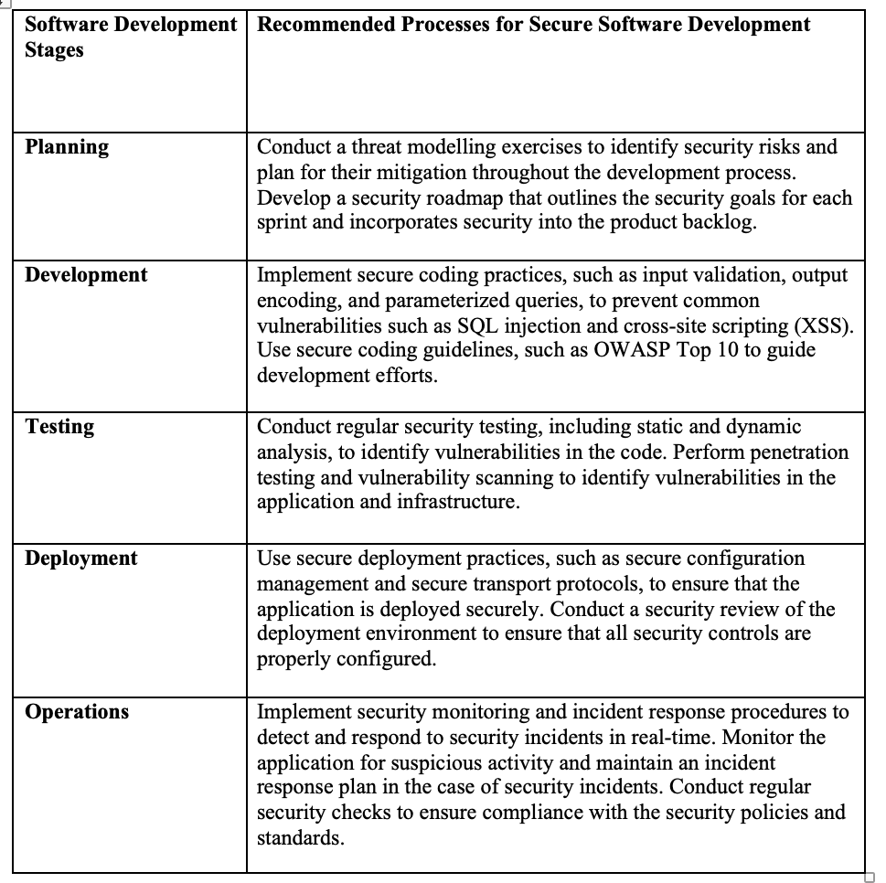References: Sharma, A. & Bawa, R. K. (2020) Identification and Integration of Security Activities for Secure Agile Development. International Journal of Information Technology.
Blog Post
Select five terms from ISO/IEC Standard 27000 Section 3 Terms and Definitions and write about how people can be managed to overcome cyber security attacks from the inside.
Access control refers to the practice of limiting access to certain resources or data within an organization to only authorized individuals or systems. Access control can be implemented through various methods such as passwords, biometric identification, or security tokens. (Iso, 2022)
Authentication is the process of verifying the identity of an individual or system. This can be done through various methods such as passwords, biometric identification, or security tokens.(Vaish et al, 2020) Authentication is an important part of access control, as it ensures that only authorized individuals or systems are given access to certain resources or data.(Vaish et al, 2020)
Continual improvement refers to the ongoing process of improving an organization's information security management system (ISMS). Continual improvement involves regularly reviewing and updating security policies, procedures, and practices to ensure that they remain effective in the face of evolving cybersecurity threats.
Information security is the practice of protecting the confidentiality, integrity, and availability of data and information within an organization. Information security involves implementing various security controls and measures to protect against cyber threats such as hacking, phishing, and malware.
A management system is a framework of policies, processes, and procedures used to manage an organization. An information security management system (ISMS) is a specific type of management system that focuses on managing the security of an organization's information and data.
To manage people and overcome cybersecurity attacks from the inside, organizations need to implement effective security measures and policies that address human behaviour. This can include training employees on cybersecurity best practices, implementing strict access controls and authentication procedures, and regularly reviewing and updating security policies to address new and emerging threats. Additionally, organizations should conduct regular audits and assessments to identify vulnerabilities and improve the effectiveness of their security measures. By continually improving their security posture and addressing the human element of cybersecurity, organizations can better protect themselves against cyber-attacks from the inside.
References:
Unit 3: Programming Languages: History, Concepts & Design
The third unit discusses the fundamental concepts of a Programming languages how they became the primary tool of computer scientist while also providing an investigating the history and design.
Programming languages have evolved over time to meet the changing needs of technology and software development. The earliest programming language was machine language, which used binary code to communicate with computers. In the 1950’s, Fortran was developed as the first high-level programming language. Fast forward to the 1990’s and Java was developed as a widely used programming language designed to be platform-independent, meaning it can run on any device. These three milestones in programming language development mark significant advancements in the field and have paved the way for the development of hundreds of programming languages that exist today.
References: Hp (2022) Computer history: A timeline of computer programming languages, HP® Tech Takes. HP. Available at: https://www.hp.com/us-en/shop/tech-takes/computer-history-programming-languages
Artefact: Secure Programming Languages
What factors determine whether a programming language is secure or not?
There are several important factors that can determine whether a programming language is secure or not. Firstly the memory management of a programming language. If it provides automatic memory management, such as garbage collection, it can help prevent many security vulnerabilities related to memory allocation and deallocation. When a programming language provides strong input validation capabilities it can help prevent injection attacks, such as SQL injection and cross-site scripting (XSS). A programming language that can provide robust error handling mechanisms can help prevent runtime errors and buffer overflows that can be exploited by attackers. Some programming languages provide built-in security features, such as encryption libraries and authentication mechanisms that can help prevent various types of attacks.
Overall, the security of a programming language depends on a combination of factors, including the language's design and implementation, the available security tools and libraries, and the skills and practices of developers who use the language to build software.
Could Python be classed as a secure language?
Python, like any other programming language, has some security strengths and weaknesses to be considered when assessing whether Python can be classified as a secure language: Python provides automatic memory management, which can help prevent many memory-related vulnerabilities, such as buffer overflows. Python also provides a range of built-in input validation mechanisms, such as regular expressions and string methods, which can help prevent common input-related attacks, such as SQL injection and XSS. Python also provides robust error handling mechanisms, such as try-except blocks which can help prevent runtime errors that can be exploited by attackers. Python also provides several built-in security features, such as the hashlib module for encryption, the ssl module for secure socket layers, and the hmac module for message authentication.
In conclusion, Python can be classified as a relatively secure language, especially when compared to some other programming languages. However, as with any language, the security of Python applications ultimately depends on the skills and practices of the developers who use the language to build software.
Discuss if Python would be a better language to create secure operating systems than C.
Python is a high-level programming language, while C is a low-level programming language. As such, both languages have different strengths and weaknesses when it comes to creating secure operating systems.
C gives developers more control over memory management, which can be beneficial when creating an operating system. However, the manual memory management in C can also lead to buffer overflows, which are a common source of security vulnerabilities. Python's automatic memory management can help prevent many memory-related vulnerabilities, but it also means that developers have less control over memory management. Python has a range of built-in input validation mechanisms, while in C, input validation must be implemented manually. Python's input validation mechanisms can help prevent common input-related attacks. Python has robust error handling mechanisms, such as try-except blocks, that can help prevent runtime errors that can be exploited by attackers. C also has error handling mechanisms, but they can be more complex and may require more developer expertise. Python provides several built-in security features, such as the hashlib module for encryption and the hmac module for message authentication while C, on the other hand, does not provide any built-in security features.
Overall, both Python and C have their advantages and disadvantages when it comes to creating secure operating systems. While Python's automatic memory management and built-in security features can help prevent certain types of security vulnerabilities, C's manual memory management and greater control over hardware can be beneficial in creating an operating system that is highly secure. Ultimately, the choice of language depends on the specific security requirements of the operating system and the skills and expertise of the developers who will be working on the project.
References: Pillai, A.B. (2017) “Chapter 2. Chapter 6. Chapter 7. Chapter 8.,” in Software architecture with python. Packt Publishing Limited.
Discussion Forum: Summary post
Broken access control is a coding weakness that occurs when an application fails to restrict access to resources or functionality based on user roles or privileges. This can allow unauthorized users to access sensitive information or perform actions they are not authorized to do. (Dalton et al, 2009) OWASP is a non-profit organization that provides information and tools for improving the security of web applications. OWASP has a list of the top 10 web application security risks, and broken access control is one of them. (OWASP, 2022) Other weaknesses identified by OWASP that relate to broken access control include:
- Insufficient Authentication/Authorization: This weakness occurs when an application does not properly authenticate or authorize users, which can lead to unauthorized access.
- Injection: Injection attacks can be used to bypass access control by manipulating input data to trick the application into granting access to unauthorized users
- Cross-Site Scripting (XSS): XSS attacks can be used to bypass access control by injecting malicious code into a web page, which can then be executed by an unsuspecting user who has access to sensitive information or functionality. (OWASP, 2022)
Broken access control can occur due to several reasons, such as the improper configuration of access controls. Developers may not properly configure access controls for different users. This can result in users having more privileges than they should, or having access to sensitive information they should not be able to see. Also if an application fails to properly validate user input, attackers can manipulate input parameters to bypass access controls and gain unauthorized access. (Dalton et al, 2009) Overall, it is essential for developers to properly implement access control mechanisms to prevent unauthorized access to sensitive information or functionality. Proper validation of user input, monitoring of access attempts, and configuration of access controls for different user roles are crucial for mitigating the risks associated with broken access control.
Below shows a modification to the original Broken access diagram from unit 1 this was updated with the guidance and comments from module peers and tutor.
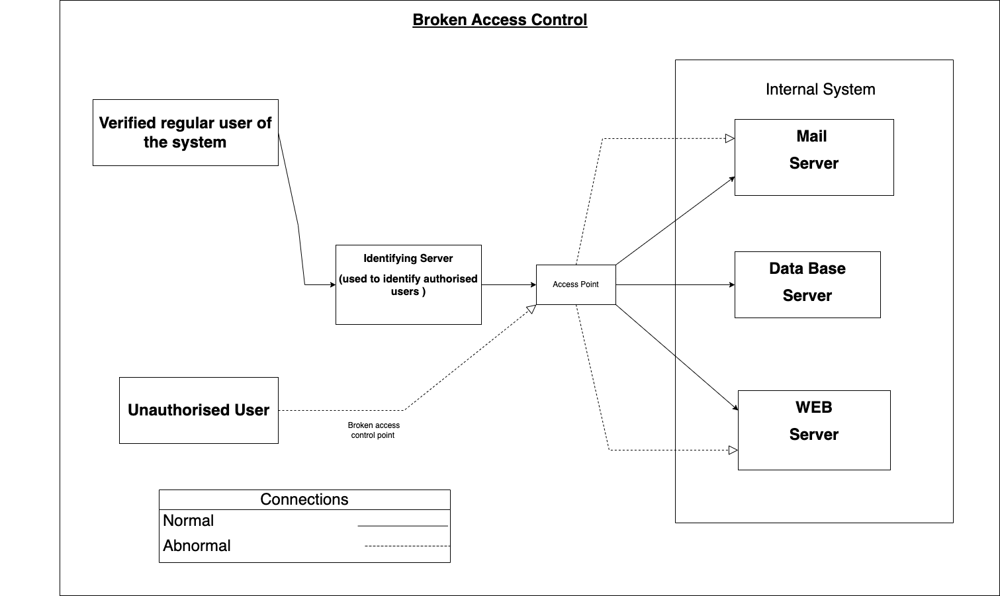References:
Codio activities: Exploring Python tools and features
Activity 1
The code below was taken from the Codio - Buffer overflow in C workspace. It is a simple program that creates a buffer and then asks you for a name, and prints it back out to the screen.
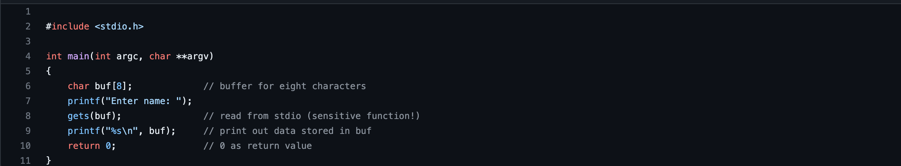When I ran my name through the code as prompted it printed my name back to me as the output without any noticeable changes. When re-running this program using the ./bufoverflow command and this time entering a string of 10 letters the output message shown below was displayed.
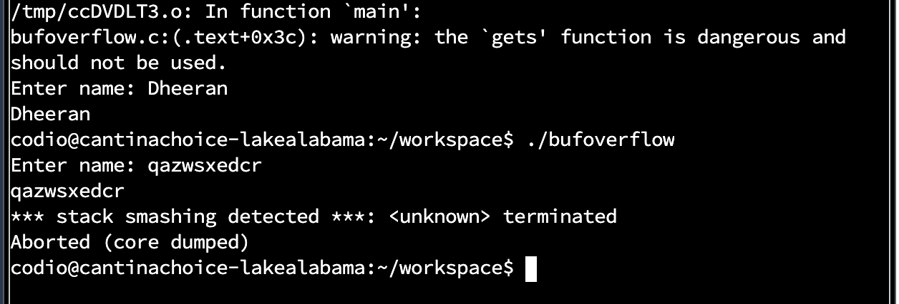The displayed message indicated that the running of program was cancelled due to the act of overwriting the memory beyond the allocated stack frame which was caused due to the large number of characters in the string used. This type of error message is often caused by programming errors, such as buffer overflow or other memory-related bugs. These types of errors can lead to security vulnerabilities and should be fixed as soon as possible.
Activity 2
The code shown below is taken from Codio - Buffer overflow in Python workspace.
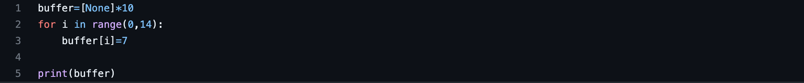The result is that the code will not run due to the Indexerror: list assignment index is out of order. By next installing pylint to the program by imputing the pip3 install pylint command into the terminal and then running it using the following command: pylint Overflow.py. The results are shown below:
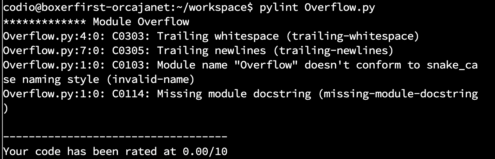When you run Pylint on your code, it generates a report that includes a score out of 10, based on the number and severity of issues found in your code. A score of 0/10 in Pylint indicates that your code has no detectable issues or violations according to Pylint's default configuration. This is the best possible score you can get and indicates that your code is clean and well-written according to Pylint's standards. Although the code was well-written this does not fix the issue of the index error stated earlier which was caused due to try to assign a value to an index that does not exist in a Python list. In other words, trying to access an index that is beyond the bounds of the list.
Unit 4: Exploring Programming Language Concepts
The fourth unit discusses the effect of the key programming concepts on system security. The focus is on two concepts in particular, the regular expressions (regex) and recursion.
Artefact: Regex and Recursion
What is ReDOS and what part do ‘Evil Regex’ play?
ReDoS stands for Regular expression Denial of Service, which is a type of vulnerability that can be exploited in applications that use regular expressions. It occurs when an attacker creates a specially crafted input that takes a long time to process and causes the application to become unresponsive or crash. The root cause of ReDoS is typically an inefficient regular expression pattern that is susceptible to exponential-time matching behaviour.
Evil Regex" refers to regular expression patterns that are deliberately designed to exploit ReDoS vulnerabilities. These patterns often involve the use of repetition operators such as * and +, which can cause backtracking and exponential matching. By crafting an input that triggers this behaviour, an attacker can consume huge amounts of CPU time and cause a denial of service
What are the common problems associated with the use of regex? How can these be mitigated?
The use of regular expressions (regex) can lead to several common problems, including: ReDoS Vulnerabilities: As mentioned earlier, inefficient regex patterns can lead to ReDoS vulnerabilities that can be exploited by attackers to cause denial of service attacks. False positives/negatives, regular expressions are powerful tools but can be prone to producing false positives or negatives, where it either matches incorrect inputs or fails to match correct ones. Limited readability, complex regex patterns can be difficult to read and understand, making it challenging for other developers to maintain or modify the code. Compatibility issues, regular expressions can vary in syntax and behaviour across different programming languages, which can cause compatibility issues when code is transferred or reused.
To mitigate these issues, developers can follow these best practices when working with regular expressions these are to limit the use of complex patterns. By using simpler patterns whenever possible, this minimizes the risk of ReDoS vulnerabilities and improve readability. By testing regular expressions with a variety of inputs, including inputs that are expected to match and those that are not. This helps to identify false positives and negatives and improve the accuracy of the regex pattern. By using tools such as regex validators to check the syntax and efficiency of the regex patterns this helps to mitigate some issues. Finally by ensuring compatibility of regular expressions across different programming languages ensures that the code can be ported or reused without issues.
How and why could regex be used as part of a security solution?
Regular expressions (regex) can be used as part of a security solution to help detect and prevent security threats in a variety of ways. Regular expressions can be used to validate user input and ensure that it meets specific requirements, such as length, format, or content. This can prevent input-based attacks, such as SQL injection, cross-site scripting (XSS), and command injection. Regular expressions can be utilized to search through log files and detect patterns of suspicious activity. Regular expressions can also be used to search through files or network traffic and detect patterns of malicious code or malware, such as virus signatures. Regular expressions can be used to mask sensitive data, such as credit card numbers, social security numbers.
In conclusion, regular expressions are a powerful tool that can be used as part of a security solution to detect and prevent security threats in various ways. By using regex to validate input, analyse logs, detect malware, filter URLs and mask sensitive data while organizations can enhance their security posture and reduce the risk of security breaches.
References:
Recursion
One of the classic programming problems that is often solved by recursion is the towers of Hanoi problem. Read the explanation, study the code and then create your own version.
The Towers of Hanoi is a puzzle where you need to move a stack of disks from one peg to another, following the following rules:
- Only one disk can be moved at a time
- No disk may ever rest atop a smaller disk.
This problem can be solved using recursion, which means breaking down the problem into smaller sub-problems. To move n amount of disks, we can move the top n-1 disks to the temporary peg, move the largest disk to the destination peg, and then move the n-1 disks to the destination peg using the original peg as now a temporary peg. We keep repeating this process recursively until we solve the problem for the base case of moving just one disk.
Below shows the python program I made that uses the concept of recursion. It can ask for the number of disks and then executes the move, finally displaying the number of moves executed to reach the solution.
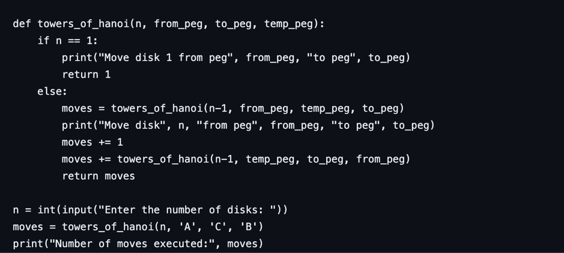The function towers_of_hanoi takes four total arguments, the number of disks (n), the peg from which to move the disks (from_peg), the peg to which to move the disks (to_peg), and the temporary peg to use (temp_peg). If n is 1, we simply move the disk from the from_peg to the to_peg and return 1 move. Finally, the user is asked for the number of disks, call the towers_of_hanoi function with the starting and ending pegs, and display the number of moves executed.
The results for a test of 5 disks shown here.
Regex
The UK postcode system consists of a string that contains a number of characters and numbers. Below shows a python program that implements a regex that complies with the real rules for UK post codes and tests them against the given post codes.
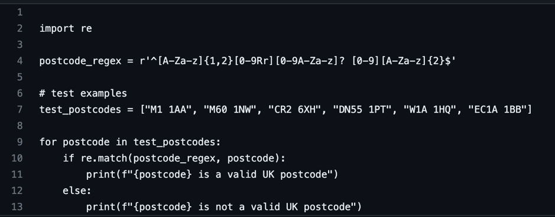The following code shows the validity of the given test post codes that have been used for testing
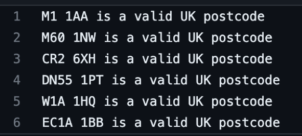How do you ensure your solution is not subject to an evil regex attack?
To ensure that the solution is not subject to an evil regex attack the following solutions can be implemented. Firstly the use of a regex engine that supports anti-DoS features, as some engines have built-in anti-DoS features that can detect and prevent ReDoS attacks. For example the re2 library for Python has a feature called "safe search mode" that can be used to prevent ReDoS attacks. Secondly by using a more restrictive regex pattern this could help to reduce the probability of an evil regex attack. However, it is vital to ensure that the regex pattern used is as restrictive as possible while still allowing all valid inputs.
References:
Unit 5: An Introduction to Testing
The fifth unit of the module focuses on the testing of software for both quality and security. These include the consideration of the practices which are used in industry and are reinforced from a practical perspective through harnessing the tools that are available in Python to automated testing.
Artefact: Cyclomatic Complexity
The Cyclomatic Complexity is commonly considered in modules on testing the validity of code design today. However, in your opinion, should it be? Does it remain relevant today? Specific to the focus of this module, is it relevant in our quest to develop secure software?
Cyclomatic complexity is a measure of the complexity of a program that is commonly used in software testing to assess the quality of the code design. It calculates the number of independent paths through a program's source code, and can help to identify potential errors or bugs in the code. (Shepperd, 1988)
In my opinion, cyclomatic complexity remains relevant today, especially in the development of secure software. A high cyclomatic complexity indicates that the program may have more complex control flow and decision-making, which can lead to a higher likelihood of errors or vulnerabilities that could be exploited by attackers. By keeping cyclomatic complexity low, developers can make their code easier to understand, maintain and test.(Gujar, 2019) It can also help to reduce the likelihood of bugs or security vulnerabilities. However, cyclomatic complexity is not the only measure of code quality, and it should not be used as the sole metric for assessing software security. Other factors, such as the use of secure coding practices, proper data validation, and thorough testing, are also essential in developing secure software.
In summary, while cyclomatic complexity remains relevant today, it should not be the only metric for assessing code quality or security. Developers should also employ other best practices in secure coding to ensure that their software is safe and reliable.
References:
Unit 6: Using Linters to Support Python Testing
The sixth unit focuses on the application of different resources and technologies that are available within python to help support the development of high quality and secure code.
Artefacts: Linters
A linter is a tool that analyses code to detect and report errors. It typically performs static analysis of code by scanning through the code and looking for common patterns and other known issues. Linter tools often provide suggestions or warnings to help programmers ensure their code is consistent, maintainable, and conforms to best practice standards. Using a linter can be beneficial for software developers as it helps them identify and correct issues early in the development process this reducing the likelihood of bugs creating overall more secure code.
There are many different linters available and they can vary in their output and the types of issues that they detect. The general output from a linter can be classified into three main categories: warnings, errors and suggestions.
Errors are typically the most severe issues detected by a linter, and can indicate that the code contains a problem that must be fixed before it can be executed. Errors may include thing like syntax errors or undefined variables. Warnings are less severe than errors, and they indicate potential issues that could lead to errors or other problems if not addressed. Warnings may include things like unused variables or code that could be simplified. Suggestions are the least severe issues detected by a linter, and they provide advice on how to improve the code or make it more maintainable. Suggestions may include things like consistent formatting, using clearer variable names, or commenting code to improve its readability. There is a high relevance and applicability of linter in secure software development this is due to it being able to help identify potential security vulnerabilities and issues in the code. By detecting and highlighting common coding errors and insecure practices, linters can help prevent security issues from arising in the first place. As well as this linters can detect insecure coding practices and enforce a higher coding standard that promote secure coding practices
Ultimately, the output from a linter should be evaluated based on its impact on the overall quality and maintainability of the code as well as its relevance to the specific development and testing scenarios.
References:
Reflection & Team Working: Design Document
The design document is the first assignment for the secure software development module. It is the first group assignment that I have worked on in computer science so far. The group I was assigned to is known as Team Transparency and our task is to develop a design document for the development of an application that provides a secure repository for an organisation. This will further be implemented into a fully realised program by our group. The teamwork within my group was smooth with us firstly setting out communication methods which we decided to use a Microsoft team’s, this was due to our large time differences. Our first task as a group was to decide on a domain for which the program would be built for.
Team transparency ultimately decided on The International Space Station (ISS), this was entire due to it being the most interesting domain that would also fit the criteria to build a useful piece of secure software. Our primary object was to facilitate and securely store the constant stream of mission data coming from the ISS, we needed to develop and deploy a software system that will provide a secure repository for data transmitted from the International Space Station, the team chose to make a data archive or IDA as we would refer to it as.
The design of our system was broken down into these systems: The IDA prototype is comprised of Bottle running the backend & web server and HTML & CSS presenting a simple GUI. While the data is to be stored in SQLite database and communicated with via the Bottle backend. The DataService microservice processes the data stream, decrypts incoming ISS data with the cryptography Python library using Fernet symmetric cryptography and stores the data in the local SQLite database. The frontend comprises of three interfaces: a login portal, a table viewer, and an admin dashboard showing users and event logs. Therefore, the users must authenticate through the login to access the directory. All authorised and authenticated users can create and read data via this interface. While superusers(admin) can also update and delete data via this interface, manage users via the admin dashboard and view event logs.
With a clear idea of what the different aspects of system we started to develop the UML diagrams we chose to make firstly the Use case diagram which showed the user roles and impact on the system. Secondly we made two separate activity diagrams one for each type of user. That being the regular user and the admin who has extra security privileges into the system. Lastly we made the class diagram this was still incomplete at submission due to our team needing to start development before finalising this.
Overall team transparency worked well together to create a comprehensive design document. As this was our first time working together there was some getting used to each other and the different style of work but we ultimately managed to submit something we were happy with.
Unit 7: Introduction to Operating Systems
Unit seven discusses Operating Systems and their relationships to programming languages and security. Most applications need to interact with an operating system whether it is to input or to output data.
Operating systems can be vulnerable to a variety of risks these include malware, exploits and denial of service. To mitigate these risks, several security measures can be implemented, such as regular updates, access controls, encryption, and user education on safe computing practices. Additionally, the use of static and dynamic libraries can also impact the security and performance of the system. While static libraries can improve application performance and are preferred for small applications or those with few dependencies, dynamic libraries can be shared between multiple applications, reducing the overall size of the system and overall are preferred for larger applications with many dependencies. Dynamic libraries can also be updated independently of the applications that use them, making it easier to patch.
Static vs dynamic loading in operating system (OS) (2023) PREP INSTA. Available at: https://prepinsta.com/operating-systems/static-vs-dynamic-loading/
Artefacts: Ontology
The ontology presented in the article by Arnaut et al 2010 discusses the ontology to support the registering of services in SOA repositories. With the purpose of supporting the searching and recovery of the services in the development stage for any implementation of technology. The ontologies discussed include those of the SOA (service oriented architecture) and OWL. The concepts discussed can be applied to the summative task of designing a secure software for use on the international space station in the case of my group the goal is to make a data archive program. For which the ontology that would be relevant is as follows:
- Data, any type of digital or analogue information generated or used in the space station, including research data, telemetry data or other critical mission data.
- Security, the measures and protocols in place to protect the confidentiality and the availability of the data. This including the access control, encryption, authentication alongside the use auditing.
- Archiving. The process of capturing, storing and preserving the data for long-term access and reuse.
- User Roles and Permissions, the different types of users who interact with the data archive program and their respective privileges and responsibilities, such as the normal permitted user and the admin.
- Legal and Ethical Compliance, the regulations and ethical standards that govern the use, sharing and retention of the data.
- Data Quality, the standards and criteria for assessing and ensuring the accuracy, completeness, and reliability of the data, including data validation and verification procedures.
- User access tracking, the program needs to monitor who and when a user logs into the system and accesses data from the program. This creates the opportunity to audit and tracking user activity.
By incorporating these concepts into an ontology, the data archive program can provide a structured and systematic approach to managing the data in a secure, reliable, and compliant manner, while ensuring that the data remains accessible and usable for the ISS.
W. Arnaut, K. Oliveira and F. Lima,(2010) "OWL-SOA: A service oriented architecture ontology useful during development time and independent from implementation technology," 2010 Fourth International Conference on Research Challenges in Information Science (RCIS), pp. 523-532, doi: 10.1109/RCIS.2010.5507314.
Unit 8: Cryptography and Its Use in Operating Systems
The eighth unit of the module discusses the concept of cryptography. Cryptography is the practice of securing communication in the presence of third parties. It involves transforming plain text or data into an unreadable format, known as cipher text and using various algorithms and keys. The process of transforming the original message into the cipher text is known as encryption, while the process of transforming the cipher text back into the original message is known as decryption.
Artefact: Cryptography
Select one of the methods discussed in the article by tutorialpoint and create a python program that can take a text file encrypt it and output an encrypted version as a file in your folder.
I chose to use the Caesar cypher as my method for my cryptography program (shown below) due to it being the easiest and most commonly used method of implementation. It is based on the method of substitution. This means that every letter used in the message is replaced by a new letter. The replacement letter results from a letter offset within the alphabet that is determined in advance.
I believe the program would make files that meet GDPR regulations depending on the type of data being used to be decrypted. However, in most cases where the goal is to safe guard information as safely as possible the use of a Caesar cypher would not be the ideal choice due to the limited number of variable in this case being 25 due to the options of the alphabet and it commonly being considered to be the weakest form of cryptography.
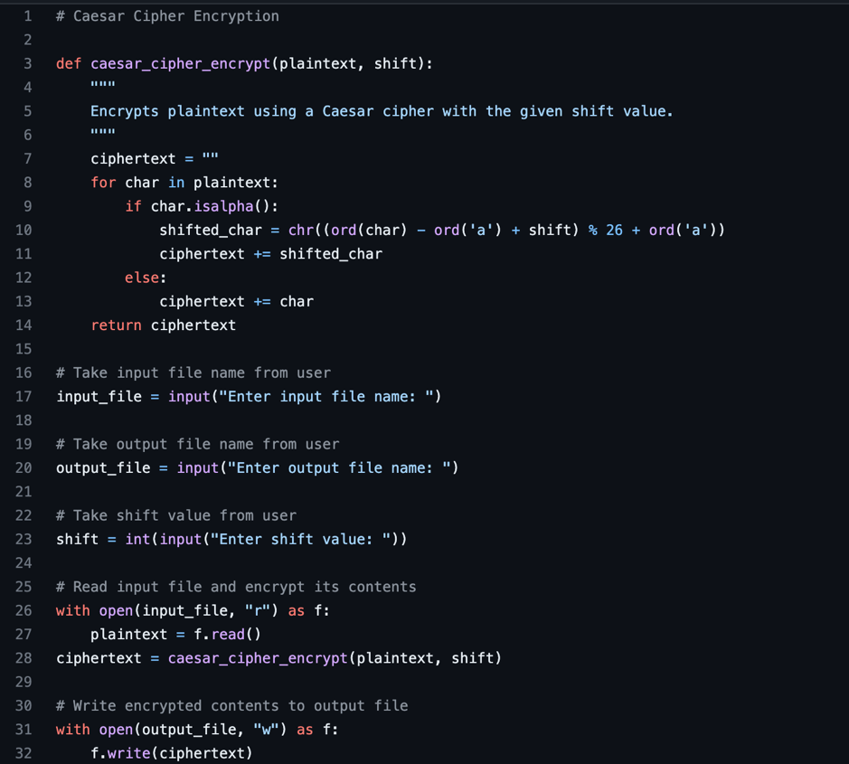The program code and test results are found here.
The input file was “test” which consisted the text “hello world”
The output file was named “test123” and the chosen shift value was “3”
The results text that was outputted to the Test123 file was: “khoor zruog”
Reference: Cryptography with Python - Quick Guide (no date) Tutorials Point. Available at: https://www.tutorialspoint.com/cryptography_with_python/cryptography_with_python_quick_guide.htm
Discussion Forum: Truecrypt
Truecrypt was a free open-source encryption software that was used to create encrypted virtual disks, partitions, or entire storage devices. The software was developed by a group of anonymous developers, and it was known for its strong encryption capabilities and ease of use. development of TrueCrypt was abruptly halted in 2014, and the developers advised users to switch to other encryption software due to security concerns. Since then, various security audits have been conducted on TrueCrypt's source code, revealing some potential vulnerabilities.(Goodin, 2015) TrueCrypt used a weak random number generator, which made the encryption keys more predictable and easier to crack. TrueCrypt did not support the latest encryption standards, which made it less secure compared to other encryption software. Some parts of TrueCrypt's code were found to be vulnerable to buffer overflow attacks, which could allow an attacker to execute arbitrary code on the system.TrueCrypt's source code was found to be difficult to understand which raised concerns about the possible presence of backdoors or intentional vulnerabilities.(Nygen, nd) Finally, trucrypt was last updated in 2014, and since then, no new updates or bug fixes have been released. Making it vulnerable to new security threats and issues and completely out of date. (Zhang et al, 2019)
Due to the abandonment of the truecrypt project and the vulnerabilities not being addressed by the developers. I personally cannot recommend truecrypt for personal use. It has not been updated in over eight years and there are currently safer alternatives from well-respected software developers.
References:
Unit 9: Developing an API for a Distributed Environment
The ninth unit is a continuation on testing approaches, it reiterates how consistent debugging and testing is vital for an effective development of a system. This unit introduces different types of testing, these are: manual, automated and black box testing. These are used to ensure a viable product after the development stage.
Artefact: Errors and testing
Cyclomatic complexity is one of the most commonly used metrics for assessing the complexity of an object oriented program. It can provide a qualitative measure of the independent paths present in a program. Although useful it doesn’t not provide full view of the complexity of a program as it does not take into account code semantics or the actual design of the program. There are alternative metrics that can be used separately or alongside cyclomatic complexity these are discussed below:
Code lines, this is a simple metric which counts the total lines of code used in the program. Although this does not always give an accurate representation due to different programming languages and they differing designs of a program but it can still provide a simple way to measure the complexity and size.
The maintainability index uses multiple factors such as the cyclomatic complexity and code length to provide a metric of how simple it is to edit, maintain and update a program. The higher this index the easier it is to understand and modify.
The cohesion and coupling measure the degree to which different components of a program are connected together. High cohesion and low coupling are usually signs of a good design.
The general view that I’ve concluded from these paper is that the best metric depends on the situation, with the most effectively commonly being a combination of multiple metrics.
References:
Unit 10: From Distributed Computing to Microarchitectures
Artefact: Faceted Data
Schmitz et al (2016) discusses an approach to protect systems from data leakage, called "Faceted Data". The basic idea behind Faceted Data is to create a security layer that applies a set of tags or "facets" to different data elements in a system, such as files or messages. These facets can represent different aspects of the data, such as its classification and ownership.
Do you think this is a good approach to protect systems from data leakage? What are the pros and cons?
The Faceted Data approach has several potential benefits for protecting systems from data leakage. Firstly, it provides a flexible and dynamic way to manage data access and control. New facets can be added or removed as needed, and policies can be updated or refined without the need to modify the underlying data structures. Secondly, Faceted Data can help to prevent insider threats by limiting access to sensitive data and detecting unusual or suspicious behaviour. Thirdly, Faceted Data can help to address the challenge of data classification and labelling, which is a key requirement in many data protection regulations and standards. However, there are also some potential drawbacks to the Faceted Data approach. Firstly, it may require significant changes to the existing data management and access control systems, which could be costly and time-consuming. Secondly, the effectiveness of Faceted Data may depend on the accuracy and consistency of the facets and the policies, which could be challenging to maintain in large and complex systems. Thirdly, Faceted Data may also pose new security risks if the facets or policies are misconfigured or compromised, leading to unauthorized access or leakage of sensitive data.
In conclusion, while the Faceted Data approach proposed by Schmitz et al (2016) has some potential benefits for protecting systems from data leakage, it also has some potential drawbacks that need to be carefully considered. The approach may be most effective when used in combination with other security measures, such as encryption, access controls, and monitoring.
Create an outline design of how you would create such a system in Python.
Creating a Faceted Data system in Python would involve several key components, including data tagging, access control, policy enforcement, and auditing. Below outlines how such a system could be created:
- Data tagging, by developing a tagging system that allows for the assignment of facets to different data elements. This could involve creating a metadata file for each data element that stores the facets as key-value pairs.
- Developing an access control system that checks the facets of a data element against a set of policies and user attributes to determine whether access should be granted or denied. This would involve creating a set of rules or conditions that define which facets are required for access and which users are authorized to access them.
- Develop a policy enforcement system that applies the access control rules to each data element and user request, and logs any violations or exceptions.
- Next by developing an auditing system that tracks all access attempts and modifications to the data and provides detailed reports or alerts to the administrators. This could involve creating a logging mechanism that records all access events, including the user, time and location.
- Integrating the Faceted Data system with the existing data storage and application frameworks, such as databases, file systems, email servers, or messaging platforms. This involves creating plugins or adapters that allow the system to interact with different data sources.
Overall, implementing a Faceted Data system in Python would require a combination of data modelling and system integration. As well as a complete understanding of the numerous security principles. It would also require lots of testing and validation to ensure that the system is effective and reliable.
Reference:Schmitz, T. et al. (2016) “Faceted dynamic information flow via control and Data Monads,” Lecture Notes in Computer Science, pp. 3–23. Available at: https://doi.org/10.1007/978-3-662-49635-0_1.